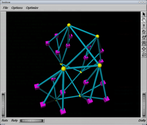

Customization tips
From WikiOAR
Configuration
In this section, you'll find advanced configuration tips
Using oaradmin to initiate the resources
You can install oardamin by installing the oar-admin package or typing make tools-install && make tools-setup from the sources.
Example for a simple cluster having 10 nodes with 2 hexa-core processors per node; the name of the nodes are james1, james2,... james10:
oaradmin resources -a "/node=james{10}/cpu={2}/core={6}"
Example for an hybrid cluster (72 itaniums cores SMP and 28 xeon cores)
oaradmin resources -a "/node=healthphy/pnode={18}/cpu={2}/core={2}" -p cputype=itanium2
oaradmin resources -a "/node=heathphy-xeon{7}/cpu={2}/core={2}" -p cputype=xeon
Oaradmin only prints a set of "oarnodesetting" commands that you can then pipe into bash when you think that it's ok:
oaradmin resources -a "/node=james{10}/cpu={2}/core={6}" | bash
Note: oaradmin checks into the oar database if you have the necessary properties (for example "cpu" or "core" which are not defined by default). So, if it fails, be sure that you have created the necessary properties before running oaradmin, for example here:
oarproperty -a cpu oarproperty -a core
Priority to the nodes with the lower workload
This tip is useful for clusters of big nodes, like NUMA hosts with numerous cpus and a few nodes. When the cluster has a lot of free resources, users often wonder why their jobs are always sent to the first node while the others are completely free. With this simple trick, new jobs are sent preferably on the nodes that have the lowest 15 minutes workload.
| Warning | |
|---|---|
Doing this will significantly reduce the chances for jobs that want to use entire nodes or big parts of them (they may wait for a longer time)! Do so only if this is what you want! | |
- First of all, create a new wload property:
oarproperty -a wload
- Then, create a script /usr/local/sbin/update_workload.sh that updates this property for each node of your cluster:
#!/bin/bash
set -e
HOSTS="zephir alize"
for host in $HOSTS
do
load=`ssh $host head -1 /proc/loadavg|awk '{print $3*100}'`
/usr/local/sbin/oarnodesetting -h $host -p wload=$load
done
- Add this script into your crontab, to be run every 5 minutes, for example inside /etc/cron.d/update_workload:
*/5 * * * * root /usr/local/sbin/update_workload.sh > /dev/null
- Then, add the wload field at the top of the SCHEDULER_RESOURCE_ORDER variable of your oar.conf file:
SCHEDULER_RESOURCE_ORDER="wload ASC,scheduler_priority ASC, suspended_jobs ASC, switch ASC, network_address DESC, resource_id ASC"
That's it!
Memory management into cpusets
Supposing you have a NUMA system (Non Uniform Access Memory), you may want to associate memory banks to sockets (cpus). This has 2 advantages:
- performance of jobs using only a part of a node
- a job having some cpus will go out of memory if it tries to access to memory of the others cpus (tipically, a one cpu job will obtain half of the memory on a 2-cpus host)
If you have a UMA system, you still may want to confine small jobs (ie jobs not using the entire node) to a subset of the memory and the trick is to use fake numa so that this tip will work for you.
All you have to do is to customize the job_resource_manager. It's a perl script, generally found into /etc/oar that you specify into the JOB_RESOURCE_MANAGER_FILE of the oar.conf file.
Examples (differences from the original script are set in bold):
- job_resource_manager_2_memory_banks.pl (download patch for default job_resource_manager)
- job_resource_manager_altix_350.pl
Use fake-numa to add memory management into cpusets
With the linux kernel (depending on the version), it is possible to split the memory into a predefined number of chunks, exactly like if a chunk was corresponding to a memory bank. This way, it's then possible to associate some "virtual" memory banks to a cpuset. As OAR creates cpusets to isolate cpu workload from other jobs, it's also possible to isolate the memory usage. A job that tries to use more memory than the total amount of the virtual memory banks associated into its cpuset should swap or fail with a out of memory signal.
Fake-numa is activated at the boot process, by a kernel option, for example:
numa=fake=12
will create 12 slots of memory accessible from the cpusets filesystem:
bzeznik@gofree-8:~$ cat /dev/cpuset/mems 0-11
Each slot size is the total size of the node divided by 12.
Once activated into the kernel of your cluster's nodes, you should edit the OAR's job manager script to take this into account. This is a perl script, located into /etc/oar/job_resource_manager.pl on the OAR server. The easiest configuration is to create as many virtual memory banks as there are cores into your nodes. By this way, you have one virtual memory bank for one core and you can tell oar to associate the corresponding memory bank to a core:
# Copy the original job manager:
cp /etc/oar/job_resource_manager.pl /etc/oar/job_resource_manager_with_mem.pl
# Edit job_resource_manager_with_mem.pl, arround line 122, replace this line:
# 'cat /dev/cpuset/mems > /dev/cpuset/'.$Cpuset_path_job.'/mems &&'.
# by this line:
# '/bin/echo '.join(",",@Cpuset_cpus).' | cat > /dev/cpuset/'.$Cpuset_path_job.'/mems && '.
# (actually, it is the same line as for the "cpus", but into the "mems" file)
Once the new job manager created, you can activate it by changing the JOB_RESOURCE_MANAGER_FILE variable of your oar.conf file:
JOB_RESOURCE_MANAGER_FILE="/etc/oar/job_resource_manager_with_mem.pl"
Now, you can check if it's working by creating a new job, and checking into it's cpuset memory file. For example:
bzeznik@gofree:~$ oarsub -l /nodes=1/core=2 -I [ADMISSION RULE] Set default walltime to 7200. [ADMISSION RULE] Modify resource description with type constraints OAR_JOB_ID=307855 Interactive mode : waiting... Starting... Connect to OAR job 307855 via the node gofree-8 bzeznik@gofree-8:~$ cat /proc/self/cpuset /oar/bzeznik_307855 bzeznik@gofree-8:~$ cat /dev/cpuset/oar/bzeznik_307855/cpus 8-9 bzeznik@gofree-8:~$ cat /dev/cpuset/oar/bzeznik_307855/mems 8-9
Then you have to teach to your users that cores are associated to a certain amount of memory per core. In this example, it's 4GB/core. Then, if a user has a memory bounded job and needs 17GB of memory, he should ask for 5 cores on the same node, even for a sequential job. It's generally not to be considered as a waste in the HPC context because cpu cores are operating correctly only if memory i/o can operate correctly. It's also possible to create an admission rule that will convert a query like "-l /memory=17" into "-l /nodes=1/core=5". Finally, it should also be possible to create more virtual memory banks (2 or 4... per core), but you then should have to create your resources as memory slots and manage a memory_slot property into the job manager for example.
Cpusets feature activation
If you want to use the cpusets feature, the JOB_RESOURCE_MANAGER_PROPERTY_DB_FIELD variable from your oar.conf file must be uncommented and set to the property that gives the cpuset ids of the resources (generally cpuset). This property must be configured properly for each resource. You can use the oar_resources_init command.
Start/stop of nodes using ssh keys
Nodes can set them automatically to the Alive status at boot time, and Absent status at shutdown. One efficient way to do this, is to use dedicated ssh keys. The advantages are:
- It is secure
- You need nothing special on the nodes but an ssh client
First of all, you need to add a ip property to the resources table and put the ip addresses of your nodes inside:
oarproperty -a ip -c oarnodesetting -p ip=192.168.0.1 --sql "network_address='node1'" oarnodesetting -p ip=192.168.0.2 --sql "network_address='node2'" ...
Then, you have to put 2 scripts into the /etc/oar directory:
Then, create 2 ssh keys with no passphrase and put them inside the .ssh directory of the home of the oar user on every nodes:
sudo su - oar ssh-keygen -t rsa -f .ssh/oarnodesetting_alive.key ssh-keygen -t rsa -f .ssh/oarnodesetting_absent.key scp -P 6667 .ssh/oarnodesetting_a* node1:.ssh ...
Add the public keys, on your frontend, into the authorized_keys file of the oar user by prefixing them with the names of the scripts seen above:
environment="OAR_KEY=1",command="/etc/oar/oarnodesetting_ssh_alive.sh" ssh-rsa AAAAB3NzaC1yc2EAAAABIwAAAQEAryzISWw4jbhphQfxWq2onrv8hZJlQo/aIjkDyh6wtriT9W289RB+SUNT7qnrDOcorgpwoCOdT6Y6ezlH2R2mLkbNyegV8q8wVTw0E96Rw7iBFXyyjsoq27E9J8ddlH6mE05G9vRaBDQiLJ76+lG20hnE1jhHiQX8DuFzG+qxmNiLGSIlYNCGNzP2RudQ6vdACzkOUw74dpwmJK0ko4YyHpxpbZ2/x66nJTINaIAPBJZ09FpUbWIRABOozr8u0GayiB06JOYnsbW0PqNUOGEvChYV8Kh3FJsM+geNh43I+uEo17p9DYhSGd1enPFOIv4VmPzZ3huT8TJH88FEz1F/zw== environment="OAR_KEY=1",command="/etc/oar/oarnodesetting_ssh_absent.sh" ssh-rsa AAAAB3NzaC1yc2EAAAABIwAAAQEA3cM8AUC5F8Olb/umgjDztTOOWiRHj3WMy+js2dowfkO0s1yNkXa+L93UOC0L/BTSTbr8ZqGWV+yNvx36T8tFjWVnd+wkjwl616SxfEQQ1YXQWS8m55vPpCs3dT4ZvtSceB9G3XCoGje+fsOpNb05X9DhX+2bXwe69SwK3e8J7QkDIeRwcEiv6vrteHE04qaVBXTJGLgJToxcPKdKDNhPUUoA+f4ZO3OG0exrfhWNfrLpVqc69nOGiTI9/9N/Dmw/V5oAEvKED2H/Ek1EaptW7hCgZTHoyj9OXbpofSro768ecymRBa6/qfEC/LvSp9e2HYIjn5rcL0WqlKBajpblmQ==
Finaly, customize the oar-node init script (generally /etc/default/oar-node or /etc/sysconfig/oar-node) with the following script:
## Auto update node status at boot time
#
# OARREMOTE: machine where we remotely run oarnodesetting (e.g. the main oar+kadeploy frontend)
OARREMOTE="172.23.0.3"
# retry settings
MODSLEEP=8
MINSLEEP=2
MAXRETRY=30
start_oar_node() {
test -n "$OARREMOTE" || exit 0
echo " * Set the ressources of this node to Alive"
local retry=0
local sleep=0
until ssh -t -oStrictHostKeyChecking=no -oPasswordAuthentication=no -i /var/lib/oar/.ssh/oarnodesetting_alive.key oar@$OARREMOTE -p 6667
do
if [ $((retry+=sleep)) -gt $MAXRETRY ]; then
echo "Failed."
return 1
fi
((sleep = $RANDOM % $MODSLEEP + $MINSLEEP))
echo "Retrying in $sleep seconds..."
sleep $sleep
done
return 0
}
stop_oar_node() {
test -n "$OARREMOTE" || exit 0
echo " * Set the ressources of this node to Absent"
local retry=0
local sleep=0
until ssh -t -oStrictHostKeyChecking=no -oPasswordAuthentication=no -i /var/lib/oar/.ssh/oarnodesetting_absent.key oar@$OARREMOTE -p 6667
do
if [ $((retry+=sleep)) -gt $MAXRETRY ]; then
echo "Failed."
return 1
fi
((sleep = $RANDOM % $MODSLEEP + $MINSLEEP))
echo "Retrying in $sleep seconds..."
sleep $sleep
done
return 0
}
You can test by issuing the following from a node:
node1:~ # /etc/init.d/oar-node stop Stopping OAR dedicated SSH server: * Set the ressources of this node to Absent 33 --> Absent 34 --> Absent 35 --> Absent 36 --> Absent 37 --> Absent 38 --> Absent 39 --> Absent 40 --> Absent Check jobs to delete on resource 33 : Check done Check jobs to delete on resource 34 : Check done Check jobs to delete on resource 35 : Check done Check jobs to delete on resource 36 : Check done Check jobs to delete on resource 37 : Check done Check jobs to delete on resource 38 : Check done Check jobs to delete on resource 39 : Check done Check jobs to delete on resource 40 : Check done Connection to 172.23.0.3 closed. node1:~ # /etc/init.d/oar-node start Starting OAR dedicated SSH server: * Set the ressources of this node to Alive 33 --> Alive 34 --> Alive 35 --> Alive 36 --> Alive 37 --> Alive 38 --> Alive 39 --> Alive 40 --> Alive Done Connection to 172.23.0.3 closed.
Multicluster
You can manage several different clusters with a unique OAR server. You may also choose to have one or several submission hosts. Simply install the oar-server package on the server and the oar-user package on all the submission hosts.
You can tag the resources to keep track of which resource belongs to which cluster. Simply create a new property (for example: "cluster") and set it for each resource. Example:
oarproperties -c -a cluster for i in `seq 1 32`; do oarnodesetting -r $i -p cluster="clusterA"; done for i in `seq 33 64`; do oarnodesetting -r $i -p cluster="clusterB"; done
Users can choose on which cluster to submit by asking for a specific cluster value:
oarsub -I -l /nodes=2 -p "cluster='clusterA'"
If you have several submission hosts, you can make an admission rule to automatically set the value of the cluster property. For example, the following submission rule should do the trick:
# Title : Cluster property management
# Description : Set the cluster property to the hostname of the submission host
use Sys::Hostname;
my @h = split('\.',hostname());
# If you want to set up a queue per cluster, you can uncomment the following:
#if ($queue_name eq "default") {
# $queue_name=$h[0];
#}
if ($jobproperties ne ""){
$jobproperties = "($jobproperties) AND cluster = '".$h[0]."'";
}
else{
$jobproperties = "cluster = '".$h[0]."'";
}
Finally, you may also want to set up a queue per cluster, just because it's nicer in the oarstat output:
oarnotify --add_queue "clusterA,5,oar_sched_gantt_with_timesharing" oarnotify --add_queue "clusterB,5,oar_sched_gantt_with_timesharing"
How to prevent a node to be suspected when it was rebooted during the job or when using several network_address properties on the same physical computer
In /etc/oar/job_resource_manager.pl simply uncomment the #exit(0) line.
Activating the oar_phoenix script to automatically reboot suspected nodes
| Note | |
|---|---|
This tips depends on the Start/stop of nodes using ssh keys tips, for the node to be automatically set up to the Alive state at boot time. | |
OAR server now comes with a perl script, located into /etc/oar/oar_phoenix.pl that searches for fully suspected nodes and may send customized commands aimed at repairing them. It has a 2 level mechanism: First, it sends a 'soft' command. And after a timeout, if the node is still suspected, it sends a 'hard' command. Here is how to install the script:
- Edit the customization part of the phoenix script to set up your soft and hard commands. The '{NODENAME}' macro is set to pass the node name to the commands; here is an example:
cluster:~# vi /etc/oar/oar_phoenix.pl
# Command sent to reboot a node (first attempt)
my $PHOENIX_SOFT_REBOOTCMD="ssh -p 6667 {NODENAME} oardodo reboot";
# Timeout for a soft rebooted node to be considered hard rebootable
my $PHOENIX_SOFT_TIMEOUT=300;
# Command sent to reboot a node (second attempt)
#my $PHOENIX_HARD_REBOOTCMD="oardodo ipmitool -U USERID -P PASSW0RD -H {NODENAME}-mgt power off;sleep 2;oardodo ipmitool -U USERID -P PASSW0RD -H {NODENAME}-mgt power on";
my $PHOENIX_HARD_REBOOTCMD="oardodo /etc/oar/reboot_node_hard.sh {NODENAME}";
- Create a cron job that runs perdiodically phoenix:
cluster:~# vi /etc/cron.d/oar-phoenix */10 * * * * root /usr/sbin/oar_phoenix
Useful commands and administration tasks
Here, you'll find useful commands, sometimes a bit tricky, to put into your scripts or administration tasks
List suspected nodes without running jobs
You may need this list of nodes if you want to automatically reboot them because you don't know why they have been suspected and you think that it is a simple way to clean things:
oarnodes --sql "state = 'Suspected' and network_address NOT IN (SELECT distinct(network_address) FROM resources where resource_id IN \ (SELECT resource_id FROM assigned_resources WHERE assigned_resource_index = 'CURRENT'))" | grep '^network_address' | sort -u
List alive nodes without running jobs
oarnodes --sql "state = 'Alive' and network_address NOT IN (SELECT distinct(network_address) FROM resources where resource_id IN \ (SELECT resource_id FROM assigned_resources WHERE assigned_resource_index = 'CURRENT'))" | grep '^network_address' | sort -u
Oarstat display without best-effort jobs
oarstat --sql "job_id NOT IN (SELECT job_id FROM job_types where types_index = 'CURRENT' AND type = 'besteffort') AND state != 'Error' AND state != 'Terminated'"
Setting some nodes in maintenance mode only when they are free
You may need to plan some maintenance operations on some particular nodes (for example add somme memory, upgrade bios,...) but you don't want to interrupt currently running or planned users jobs. To do so, you can simply run a "sleep" job into the admin queue and wait for it to become running, and then set the node into maintenance mode. But you also can use this trick to set automatically the node into maintenance mode when the admin job starts:
oarsub -q admin -t cosystem -l /nodes=2 'uniq $OAR_NODE_FILE|awk "{print \"sudo oarnodesetting -m on -h \" \$1}"|bash'
This uses the "cosystem" job type that does nothing but start your command on a given host. This host has to be configured into the COSYSTEM_HOSTNAME variable of the oar.conf file, and for the current purpose, you can simply put 127.0.0.1. You also need to install the oar-node package on this host.
The example above will disable 2 free nodes, but you may want to add a -p option to specify the nodes you want to disable, for example:
-p "network_address in ('node-1','node-2')"
| Note | |
|---|---|
You can't simply do that within a "normal" job as OAR will kill your job before all the resources of the node are set into the maintenance mode | |
Optimizing and re-initializing the database with Postgres
Sometimes, the database contains so much jobs that you need to optimize it. Normally, you should have a vacuumdb running daily fron cron. You can do manually a vacuumdb -a -f -z ; reindexdb oar but don't forget to stop OAR before, and be aware that it may take some time. But the DB still may be very big and it may be a problem for backups or the nightly vaccum takes too much time. A more radical solution is to start again with a new database, but keep the old one so that you can still connect to it for jobs history. You can do this once a year for example, and you only have to backup the current database. Here is a way to do this:
- First of all, make a backup of your database! With postgres, it is as easy as:
create database oar_backup_2012 with template oar
It will create an exact copy of the "oar" database named "oar_backup_2012". Be sure that you have enough space left on the device hosting your postgres data directory. Doing so will allow you to make queries on the backup database if you need to find the history of old jobs.
- You should plan a maintenance and be sure there's no more jobs into the system.
- Make a dump of your "queues", "resources" and "admission_rules" tables.
- Stop the oar server, drop the oar database and re-create it.
- Finally, restore the "queues", "resources" and "admission_rules" tables into the new database.
- And restart the server.
Green computing
In this section, you'll find tips for optimizing the fluids consumptions of your clusters
Activating the dynamic on/off of nodes but keeping a few nodes always ready
| Warning | |
|---|---|
This tip is now partly obsoleted by the new Hulot module that comes with the latest OAR release. This energy saving module has got a keepalive feature. Take a look at the comments above all the ENERGY* variables into the oar.conf file. | |
First of all, you have to set up the ecological feature as told into the FAQ: How to configure a more ecological cluster.
| Note | |
|---|---|
If you have an ordinary cluster with nodes that are always available, you may set the cm_availability property to 2147483646 (infinite minus 1) | |
| Note | |
|---|---|
Once this feature has been activated, the Absent status may not always really mean Absent, but Standby as OAR may want to automatically power on the node. To put a node into a real Absent status, you have to set the cm_availability property to 0 | |
This tip supposes that you have set up your nodes to automatically set them to the Alive state when they boot and to the Absent state when they shutdown. You may refer to the FAQ for this: How to manage start/stop of the nodes? or to this section of the Customization tips.
Here, we provide 3 scripts that you may customize and that make your ecological configuration a bit smarter than the default as it will be aware of keeping powered on a few nodes (4 in this example) that will be ready for incoming jobs:
Very simple script containing the command that powers on your nodes. In this example, suitable for an SGI Altix Ice, we do a cpower from an admin host. You'll probably have to customize this. This script is to be put in front of the SCHEDULER_NODE_MANAGER_WAKE_UP_CMD option of the oar.conf file, like this:
SCHEDULER_NODE_MANAGER_WAKE_UP_CMD="/usr/lib/oar/oardodo/oardodo /usr/local/sbin/wake_up_nodes.sh"
This is the script for shutting down nodes. It uses sentinelle to send the halt command to the nodes, as suggested by the default configuration, but it refuses to shutdown some nodes if this results in less than 4 ready nodes. This script is to be put into the SCHEDULER_NODE_MANAGER_SLEEP_CMD by this way:
SCHEDULER_NODE_MANAGER_SLEEP_CMD="/usr/lib/oar/oardodo/oardodo /usr/local/sbin/set_standby_nodes.sh"
This script is responsible of waking up (power on) some nodes if there's not enough free alive nodes. The trick used by this script is to submit a dummy job to force OAR to wake up some nodes. It's intended to be ran periodically from the crontab, for example with such a /etc/cron.d/nodes_keepalive file:
*/5 * * * * root /usr/local/sbin/nodes_keepalive.sh
Admission rules
OAR offers a powerful system letting you customize the way that jobs enter into queues (or are rejected from queues) called "admission rules". An admission rule is a little perl script that you insert into the admission_rules SQL table of the OAR database. Here, you'll find some advanced and useful examples.
Cluster routing depending on the name of the queue
# Title : Cluster routing
# Description : Send to the corresponding cluster
my $cluster=$queue_name;
if ($jobproperties ne ""){
$jobproperties = "($jobproperties) AND cluster = '".$cluster."'";
}
else{
$jobproperties = "cluster = '".$cluster."'";
}
Cluster routing depending on the name of the submission host
# Title : Cluster routing
# Description : Send to the corresponding cluster and queue depending on the submission host
use Sys::Hostname;
my @h = split('\.',hostname());
my $cluster;
if ($h[0] eq "service0") {
$cluster="nanostar";
print "[ADMISSION RULE] Routing to NANOSTAR cluster\n";
}else {
$cluster="foehn";
print "[ADMISSION RULE] Routing to FOEHN cluster\n";
}
if ($queue_name eq "default") {
$queue_name=$cluster;
}
if ($jobproperties ne ""){
$jobproperties = "($jobproperties) AND cluster = '".$cluster."'";
}
else{
$jobproperties = "cluster = '".$cluster."'";
}
Best-effort automatic routing for some unprivileged users
Description : Users that are not members of a given group are automatically directed to the besteffort queue
my $GROUP="nanostar";
system("id -Gn $user |sed 's/ /\\n/g'|grep -w $GROUP >/dev/null");
if ($? != 0){
print("[ADMISSION RULE] !!!! WARNING !!!\n");
print("[ADMISSION RULE] !!!! AS AN EXTERNAL USER, YOU HAVE BEEN AUTOMATICALLY !!!\n");
print("[ADMISSION RULE] !!!! REDIRECTED TO THE BEST-EFFORT QUEUE !!!\n");
print("[ADMISSION RULE] !!!! YOUR JOB MAYBE KILLED WITHOUT NOTICE !!!\n");
$queue_name = "besteffort";
push (@{$type_list},"besteffort");
if ($jobproperties ne ""){ $jobproperties = "($jobproperties) AND besteffort = \'YES\'"; }else{
$jobproperties = "besteffort = \'YES\'";
}
$reservationField="None";
}
Automatic licence assignment by job type
Description : Creates a mathlab job type that automatically assigns a mathlab licence
if (grep(/^mathlab$/, @{$type_list})){
print "[LICENCE ADMISSION RULE] Adding a mathlab licence to the query\n";
foreach my $mold (@{$ref_resource_list}){
push(@{$mold->[0]},
{'resources' =>
[{'resource' => 'licence','value' => '1'}],
'property' => 'type = \'mathlab\}
);
}
}
Walltime limit
Description : By default, an admission rule limits the walltime of interactiv jobs to 2 hours. This modified rule also set up a walltime for passive jobs.
my $max_interactive_walltime = OAR::IO::sql_to_duration("12:00:00");
# 7 days = 168 hours
my $max_batch_walltime = OAR::IO::sql_to_duration("168:00:00");
foreach my $mold (@{$ref_resource_list}){
if (defined($mold->[1])){
if (($jobType eq "INTERACTIVE") and ($reservationField eq "None") and ($max_interactive_walltime < $mold->[1])){
print("[ADMISSION RULE] Walltime too big for an INTERACTIVE job so it is set to $max_interactive_walltime.\n");
$mold->[1] = $max_interactive_walltime;
}elsif ($max_batch_walltime < $mold->[1]){
print("[ADMISSION RULE] Walltime too big for a BATCH job so it is set to $max_batch_walltime.\n");
$mold->[1] = $max_batch_walltime;
}
}
}
Thanks to Nicolas Capit
Cpu time limit
Description : Rejects jobs asking for more than a cpu*walltime limit. Current limit is set to 384 hours (16 days of cpu-time)
Note: This rule is for an SMP host on which we only have a "pnodes" property (physical nodes) and "cpu" (only one core per cpu). It should be adapted for a more conventional distributed memory cluster having simple nodes with several cores per cpus.
my $cpu_walltime=iolib::sql_to_duration("384:00:00");
my $msg="";
foreach my $mold (@{$ref_resource_list}){
foreach my $r (@{$mold->[0]}){
my $cpus=0;
my $pnodes=0;
# Catch the cpu and pnode resources
foreach my $resource (@{$r->{resources}}) {
if ($resource->{resource} eq "cpu") {
$cpus=$resource->{value};
}
if ($resource->{resource} eq "pnode") {
$pnodes=$resource->{value};
}
}
# Calculate the number of cpus
if ($pnodes == 0 && $cpus == 0) { $cpus=1; }
if ($pnodes != 0) {
if ($cpus == 0) { $cpus=$pnodes*2;}
else {$cpus=$pnodes*$cpus;}
}
# Reject if walltime*cpus is too big
if ($cpus * $mold->[1] > $cpu_walltime) {
$msg="\n [WALLTIME TOO BIG] The maximum allowed walltime for $cpus cpus is ";
$msg.= $cpu_walltime / $cpus / 3600;
$msg.= " hours.\n";
die($msg);
}
}
}
Jobs number limit
Description : Limits the maximum number of simultaneous jobs allowed for each user on the cluster. Default is 50 jobs maximum per user.
It is possible to specify users having unlimited jobs number in ~oar/unlimited_reservation.users file (on oar-server)
You can also configure the max_nb_jobs by setting your value in ~oar/max_jobs (on oar-server)
Note : Array jobs are also limited by this rule.
# Title : Limit the number of jobs per user to max_nb_jobs
# Description : If user is not listed in unlimited users file, it checks if current number of jobs is well under $max_nb_jobs, which is defined in ~oar/max_jobs or is 50 by default
my $unlimited=0;
if (open(FILE, "< $ENV{HOME}/unlimited_reservation.users")) {
while (<FILE>) {
if (m/^\s*$user\s*$/m) {
$unlimited=1;
}
}
close(FILE);
}
if ($unlimited == 0) {
my $max_nb_jobs = 50;
if (open(FILE, "< $ENV{HOME}/max_jobs")) {
while (<FILE>) {
chomp;
$max_nb_jobs=$_;
}
close(FILE);
}
my $nb_jobs = $dbh->selectrow_array(
qq{ SELECT COUNT(job_id)
FROM jobs
WHERE job_user = ?
AND (state = \'Waiting\'
OR state = \'Hold\'
OR state = \'toLaunch\'
OR state = \'toAckReservation\'
OR state = \'Launching\'
OR state = \'Running\'
OR state = \'Suspended\'
OR state = \'Resuming\'
OR state = \'Finishing\') },
undef,
$user);
if (($nb_jobs + $array_job_nb) > $max_nb_jobs) {
die("[ADMISSION RULE] Error: you cannot have more than $max_nb_jobs submitted jobs at the same time.\n");
}
}
Project assignment
If you want to automatically assign a project to users submissions (replacing --project oarsub option), you simply have to set the $project variable to what you want inside an admission rule.
Restricts access to a user list for a set of resources
For example, if you defined with the command "oarproperty" a property "model" then you can enforce some properties constraints for some users.
# Title : Restricts the use of resources for some users
# Description : think to change the user list in this admission rule
my %allowed_users = (
"toto" => 1,
"titi" => 1,
"tutu" => 0
);
if (!defined($allowed_users{$user}) or ($allowed_users{$user} == 0)){
if ($jobproperties ne ""){
$jobproperties = "($jobproperties) AND model != 'bullx'";
}else{
$jobproperties = "model != 'bullx'";
}
print("[ADMISSION RULE] Automatically add the constraint to not go on the bullx nodes\n");
}
Limit the number of interactive jobs per user
# Title : Limit the number of interactive jobs per user
# Description : Limit the number of interactive jobs per user
my $max_interactive_jobs = 2;
if (($jobType eq "INTERACTIVE") and ($reservationField eq "None")){
my $nb_jobs = $dbh->do(" SELECT job_id
FROM jobs
WHERE
job_user = '$user' AND
reservation = 'None' AND
job_type = 'INTERACTIVE' AND
(state = 'Waiting'
OR state = 'Hold'
OR state = 'toLaunch'
OR state = 'toAckReservation'
OR state = 'Launching'
OR state = 'Running'
OR state = 'Suspended'
OR state = 'Resuming'
OR state = 'Finishing')
");
if ($nb_jobs >= $max_interactive_jobs){
die("You cannot have more than $max_interactive_jobs interactive jobs at a time.\n");
}
}
Auto property restriction for specific user groups
# Title : Infiniband user restrictions
# Description : put the ib property restriction depending of the groups of the user
if ((! grep(/^besteffort$/, @{$type_list})) and ($user ne "serviware")){
print("[ADMISSION RULE] Check on which Infiniband network you can go on...\n");
my ($user_name,$user_passwd,$user_uid,$user_gid,$user_quota,$user_comment,$user_gcos,$user_dir,$user_shell,$user_expire) = getpwnam($user);
my ($primary_group,$primary_passwd,$primary_gid,$primary_members) = getgrgid($user_gid);
my ($seiscope_name,$seiscope_passwd,$seiscope_gid,$seiscope_members) = getgrnam("seiscope");
my %seiscope_hash = map { $_ => 1 } split(/\s+/,$seiscope_members);
my ($globalseis_name,$globalseis_passwd,$globalseis_gid,$globalseis_members) = getgrnam("globalseis");
my %globalseis_hash = map { $_ => 1 } split(/\s+/,$globalseis_members);
my ($tohoku_name,$tohoku_passwd,$tohoku_gid,$tohoku_members) = getgrnam("tohoku");
my %tohoku_hash = map { $_ => 1 } split(/\s+/,$tohoku_members);
my $sql_str = "ib = \'none\'";
if (($primary_group eq "seiscope") or (defined($seiscope_hash{$user}))){
print("[ADMISSION RULE] You are in the group seiscope so you can go on the QDR Infiniband nodes\n");
$sql_str .= " OR ib = \'QDR\'";
}
if (($primary_group eq "globalseis") or (defined($globalseis_hash{$user})) or ($primary_group eq "tohoku") or (defined($tohoku_hash{$user}))){
print("[ADMISSION RULE] You are in the group globalseis or tohoku so you can go on the DDR Infiniband nodes\n");
$sql_str .= " OR ib = \'DDR\'";
}
if ($jobproperties ne ""){
$jobproperties = "($jobproperties) AND ($sql_str)";
}else{
$jobproperties = "$sql_str";
}
}
Debug admission rule
When you play with admission rules, you can dump some data structures with YAML to have a readable output of the submission requests for example:
print "[DEBUG] Output of the resources query data structure:\n";
print YAML::Dump(@{$ref_resource_list});
NUMA topology optimization
See the NUMA topology optimization usecase
Short, medium and long queues
Description: The following is a set of admission rules that route on 3 different queues having different priorities. Some core number restrictions per queue are set up.
Queues creation:
oarnotify --add_queue short,9,oar_sched_gantt_with_timesharing_and_fairsharing oarnotify --add_queue medium,5,oar_sched_gantt_with_timesharing_and_fairsharing oarnotify --add_queue long,3,oar_sched_gantt_with_timesharing_and_fairsharing
Rules:
------
Rule : 20
# Title: Automatic routing into the short queue
# Description: Short jobs are automatically routed into the short queue
my $max_walltime="6:00:00";
my $walltime=0;
# Search for the max walltime of the moldable jobs
foreach my $mold (@{$ref_resource_list}){
foreach my $r (@{$mold->[0]}){
if ($mold->[1] > $walltime) {
$walltime = $mold->[1];
}
}
}
# Put into the short queue if the job is short
if ($walltime <= OAR::IO::sql_to_duration($max_walltime)
&& !(grep(/^besteffort$/, @{$type_list}))) {
print " [SHORT QUEUE] This job is routed into the short queue\n";
$queue_name="short";
}
------
Rule : 21
# Title: Automatic routing into the medium queue
# Description: Medium jobs are automatically routed into the medium queue
my $max_walltime="120:00:00";
my $min_walltime="6:00:00";
my $walltime=0;
# Search for the max walltime of the moldable jobs
foreach my $mold (@{$ref_resource_list}){
foreach my $r (@{$mold->[0]}){
if ($mold->[1] > $walltime) {
$walltime = $mold->[1];
}
}
}
# Put into the medium queue if the job is medium
if ($walltime <= OAR::IO::sql_to_duration($max_walltime)
&& $walltime > OAR::IO::sql_to_duration($min_walltime)
&& !(grep(/^besteffort$/, @{$type_list}))) {
print " [MEDIUM QUEUE] This job is routed into the medium queue\n";
$queue_name="medium";
}
------
Rule : 22
# Title: Automatic routing into the long queue
# Description: Medium jobs are automatically routed into the medium queue
my $max_walltime="360:00:00";
my $min_walltime="120:00:00";
my $walltime=0;
# Search for the max walltime of the moldable jobs
foreach my $mold (@{$ref_resource_list}){
foreach my $r (@{$mold->[0]}){
if ($mold->[1] > $walltime) {
$walltime = $mold->[1];
}
}
}
# Put into the long queue if the job is long
if ($walltime > OAR::IO::sql_to_duration($min_walltime)
&& !(grep(/^besteffort$/, @{$type_list}))) {
print " [LONG QUEUE] This job is routed into the long queue\n";
$queue_name="long";
}
# Limit walltime of the "long" queue
if ($queue_name eq "long"){
my $min_walltime="120:00:00";
my $max_walltime="360:00:00";
foreach my $mold (@{$ref_resource_list}){
foreach my $r (@{$mold->[0]}){
if ($mold->[1] > OAR::IO::sql_to_duration($max_walltime)) {
print "\n [WALLTIME TOO BIG] The maximum allowed walltime for the long queue is $max_walltime\n";
exit(1);
}
if ($mold->[1] <= OAR::IO::sql_to_duration($min_walltime)) {
print "\n [WALLTIME TOO SHORT] The minimum allowed walltime for the long queue is $min_walltime\n";
exit(1);
}
}
}
}
------
Rule : 23
# Title : Core number restrictions
# Description : Count the number of cores requested and reject if the queue does not allow this
# Check the resources
my $resources_def=$ref_resource_list->[0];
my $n_core_per_cpus=6;
my $n_cpu_per_node=2;
my $core=0;
my $cpu=0;
my $node=0;
foreach my $r (@{$resources_def->[0]}) {
foreach my $resource (@{$r->{resources}}) {
if ($resource->{resource} eq "core") {$core=$resource->{value};}
if ($resource->{resource} eq "cpu") {$cpu=$resource->{value};}
if ($resource->{resource} eq "nodes") {$node=$resource->{value};}
if ($resource->{resource} eq "network_address") {$node=$resource->{value};}
}
}
# Now, calculate the number of total cores
my $n_cores=0;
if ($node == 0 && $cpu != 0 && $core == 0) {
$n_cores = $cpu*$n_core_per_cpus;
}elsif ($node != 0 && $cpu == 0 && $core == 0) {
$n_cores = $node*$n_cpu_per_node*$n_core_per_cpus;
}elsif ($node != 0 && $cpu == 0 && $core != 0) {
$n_cores = $node*$core;
}elsif ($node == 0 && $cpu != 0 && $core != 0) {
$n_cores = $cpu*$core;
}elsif ($node == 0 && $cpu == 0 && $core != 0) {
$n_cores = $core;
}
else { $n_cores = $node*$cpu*$core; }
print " [CORES COUNT] You requested $n_cores cores\n";
# Now the restrictions:
my $short=132; # 132 cores = 11 noeuds
my $medium=132; # 132 cores = 11 noeuds
my $long=132; # 132 cores = 11 noeuds
if ("$queue_name" eq "long" && $n_cores > $long) {
print "\n [CORES COUNT] Too many cores for this queue (max is $long)!\n";
exit(1);
}
if ("$queue_name" eq "medium" && $n_cores > $medium) {
print "\n [CORES COUNT] Too many cores for this queue (max is $medium)!\n";
exit(1);
}
if ("$queue_name" eq "short" && $n_cores > $short) {
print "\n [CORES COUNT] Too many cores for this queue (max is $short)!\n";
exit(1);
}
------
Rule : 24
# Title : Restriction des jobs long ou medium
# Description : Les jobs long ou medium ne peuvent pas tourner sur les ressources ayant la propriété long=NO
if ("$queue_name" eq "long" || "$queue_name" eq "medium"){
if ($jobproperties ne ""){
$jobproperties = "($jobproperties) AND long = \'YES\'";
}else{
$jobproperties = "long = \'YES\'";
}
print "[ADMISSION RULE] Adding long/medium jobs resources restrictions\n";
}
Naming interactive jobs by default
Description: Interactive jobs with no name are automatically named "interactive unnamed job"
if (($jobType eq "INTERACTIVE") and ($job_name eq )){
$job_name = 'interactive unnamed job';
}
Use cases
OpenMPI + affinity
We saw that the Linux kernel seems to be incapable of using correctly all the CPUs from the cpusets.
Indeed, reserving 2 out of 8 cores on a node and running a code that uses 2 process, these 2 process where not well assigned to each cpu. We had to give the CPU MAP to OpenMPI to do cpu_affinity:
i=0;oarprint core -P host,cpuset -F "% slot=%" | while read line ; do echo "rank $i=$line"; ((i++)); done > affinity.txt
[user@node12 tmp]$ mpirun -np 8 --mca btl openib,self -v -display-allocation -display-map --machinefile $OAR_NODEFILE -rf affinity.txt /home/user/espresso-4.0.4/PW/pw.x < BeO_100.inp
NUMA topology optimization
In this use case, we've got a numa host (an Altix 450) having a "squared" topology: nodes are interconnected by routers like in this view:
 In yellow, "routers", in magenta, "nodes" (2 dual-core processors per node)
Routers interconnect IRUS (chassis) on which the nodes are plugged (4 or 5 nodes per IRU).
What we want is that for jobs that can enter into 2 IRUS or less, minimize the distance between the resources (ie use IRUS that have only one router interconnexion between them). The topology may be siplified as follows:
The idea is to use moldable jobs and an admission rule that converts automatically the user requests to a moldable job. This job uses 2 resource properties: numa_x and numa_y that may be analogue to the square coordinates. What we want in fact, is the job that ends the soonest between a job running on an X or on a Y coordinate (we only want vertical or horizontal placed jobs).
The numa_x and numa_y properties are set up this way (pnode is a property corresponding to physical nodes):
| pnode | iru | numa_x | numa_y |
|---|---|---|---|
| itanium1 | 1 | 0 | 1 |
| itanium2 | 1 | 0 | 1 |
| itanium3 | 1 | 0 | 1 |
| itanium4 | 1 | 0 | 1 |
| itanium5 | 2 | 1 | 1 |
| itanium6 | 2 | 1 | 1 |
| itanium7 | 2 | 1 | 1 |
| itanium8 | 2 | 1 | 1 |
| itanium9 | 2 | 1 | 1 |
| itanium10 | 3 | 0 | 0 |
| itanium11 | 3 | 0 | 0 |
| itanium12 | 3 | 0 | 0 |
| itanium13 | 3 | 0 | 0 |
| itanium14 | 3 | 0 | 0 |
| itanium15 | 4 | 1 | 0 |
| itanium16 | 4 | 1 | 0 |
| itanium17 | 4 | 1 | 0 |
| itanium18 | 4 | 1 | 0 |
For example, the following requested ressources:
-l /core=16
will result into:
-l /numa_x=1/pnode=4/cpu=2/core=2 -l /numa_y=1/pnode=4/cpu=2/core=2
Here is the admission rule making that optimization:
# Title : Numa optimization
# Description : Creates a moldable job to take into account the "squared" topology of an Altix 450
my $n_core_per_cpus=2;
my $n_cpu_per_pnode=2;
if (grep(/^itanium$/, @{$type_list}) && (grep(/^manual$/, @{$type_list}) == "") && $#$ref_resource_list == 0){
print "[ADMISSION RULE] Optimizing for numa architecture (use \"-t manual\" to disable)\n";
my $resources_def=$ref_resource_list->[0];
my $core=0;
my $cpu=0;
my $pnode=0;
foreach my $r (@{$resources_def->[0]}) {
foreach my $resource (@{$r->{resources}}) {
if ($resource->{resource} eq "core") {$core=$resource->{value};}
if ($resource->{resource} eq "cpu") {$cpu=$resource->{value};}
if ($resource->{resource} eq "pnode") {$pnode=$resource->{value};}
}
}
# Now, calculate the number of total cores
my $n_cores=0;
if ($pnode == 0 && $cpu != 0 && $core == 0) {
$n_cores = $cpu*$n_core_per_cpus;
}
elsif ($pnode != 0 && $cpu == 0 && $core == 0) {
$n_cores = $pnode*$n_cpu_per_pnode*$n_core_per_cpus;
}
elsif ($pnode != 0 && $cpu == 0 && $core != 0) {
$n_cores = $pnode*$core;
}
elsif ($pnode == 0 && $cpu != 0 && $core != 0) {
$n_cores = $cpu*$core;
}
elsif ($pnode == 0 && $cpu == 0 && $core != 0) {
$n_cores = $core;
}
else { $n_cores = $pnode*$cpu*$core; }
print "[ADMISSION RULE] You requested $n_cores cores\n";
if ($n_cores > 32) {
print "[ADMISSION RULE] Big job (>32 cores), no optimization is possible\n";
}else{
print "[ADMISSION RULE] Optimization produces: /numa_x=1/$pnode/$cpu/$core
/numa_y=1/$pnode/$cpu/$core\n";
my @newarray=eval(Dumper(@{$ref_resource_list}->[0]));
push (@{$ref_resource_list},@newarray);
unshift(@{%{@{@{@{$ref_resource_list}->[0]}->[0]}->[0]}->{resources}},{'resource' => 'numa_x','value' => '1'});
unshift(@{%{@{@{@{$ref_resource_list}->[1]}->[0]}->[0]}->{resources}},{'resource' => 'numa_y','value' => '1'});
}
}
Troubles and solutions
Can't do setegid!
Some distributions have perl_suid installed, but not set up correctly. The solution is something like that:
bzeznik@healthphy:~> which sperl5.8.8 /usr/bin/sperl5.8.8 bzeznik@healthphy:~> sudo chmod u+s /usr/bin/sperl5.8.8
Users tips
oarsh completion
This tip is from Jerome Reybert.
"I wanted a simple way to access another nodes from the main node of my OAR reservation (ie. to check if a library is present on another node, or to top a process...). Every time I needed this, I had to"
$ cat $OAR_NODEFILE $ oarsh "one of the nodes"
"bash_completion is a better solution. bash_completion seems to be widely available on g5k nodes. You just have to add these lines in your .bashrc, and then try oarsh <TAB>:"
function _oarsh_complete_()
{
local word=${COMP_WORDS[COMP_CWORD]}
local list=`cat $OAR_NODEFILE | uniq | tr '\n' ' '`
COMPREPLY=($(compgen -W "$list" -- "${word}"))
}
complete -F _oarsh_complete_ oarsh
PROMPT BASH for Interactive jobs
If you want to have a bash prompt with your job id and the remaining walltime then you can add in your ~/.bashrc:
if [ "$PS1" ]; then
__oar_ps1_remaining_time(){
if [ -n "$OAR_JOB_WALLTIME_SECONDS" -a -n "$OAR_NODE_FILE" -a -r "$OAR_NODE_FILE" ]; then
DATE_NOW=$(date +%s)
DATE_JOB_START=$(stat -c %Y $OAR_NODE_FILE)
DATE_TMP=$OAR_JOB_WALLTIME_SECONDS
((DATE_TMP = (DATE_TMP - DATE_NOW + DATE_JOB_START) / 60))
echo -n "$DATE_TMP"
fi
}
PS1='[\u@\h \W]$([ -n "$OAR_NODE_FILE" ] && echo -n "(\[\e[1;32m\]$OAR_JOB_ID\[\e[0m\]-->\[\e[1;34m\]$(__oar_ps1_remaining_time)mn\[\e[0m\])")\$ '
if [ -n "$OAR_NODE_FILE" ]
then
echo "[OAR] OAR_JOB_ID=$OAR_JOB_ID"
echo "[OAR] Your nodes are:"
sort $OAR_NODE_FILE | uniq -c | awk '{printf(" %s*%d\n",$2,$1)}END{printf("\n")}' | sed -e 's/,$//'
fi
fi
Then the prompt inside an Interactive job will be like:
[capitn@node006 ~](3101-->29mn)$
Many small jobs grouping
Many small jobs of a few seconds may be painful for the OAR system. OAR may spend more time scheduling, allocating and launching than the actual computation time for each job.
Gabriel Moreau developed a script that may be useful when you have a large set of small jobs. It groups you jobs into a unique bigger OAR job: http://servforge.legi.grenoble-inp.fr/pub/soft-trokata/oarutils/oar-parexec.html You can download it from this page: http://servforge.legi.grenoble-inp.fr/projects/soft-trokata/wiki/SoftWare/OarUtils
For a more generic approach you can use Cigri, a grid middleware running onto OAR cluster(s) that is able to automatically group parametric jobs. Cigri is currently in a re-writing process and a new public release is planned for the end of 2012. Please contact Bruno.Bzeznik@imag.fr for more informations.
Environment variables through oarsh
http://servforge.legi.grenoble-inp.fr/pub/soft-trokata/oarutils/oar-envsh.html
http://servforge.legi.grenoble-inp.fr/projects/soft-trokata/wiki/SoftWare/OarUtils

{kind=link}
{kind=link}